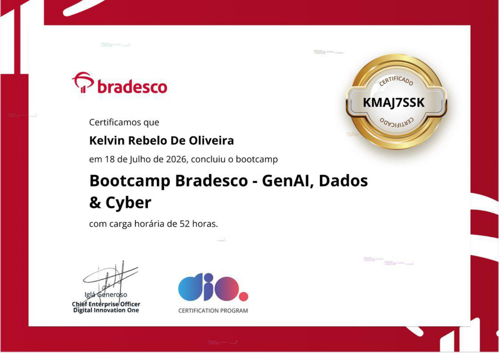

BradescoGenAI, Dados & Cyber
IA generativa, análise de dados com Excel, SQL, Power Query e Python, e cibersegurança aplicada ao setor financeiro. Projeto final: BIA, agente financeiro com validação anti-alucinação.
caso de estudo → verificar na DIO ↗